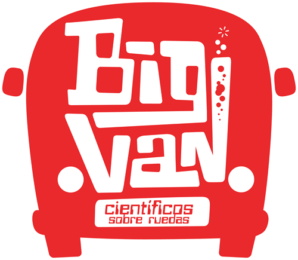
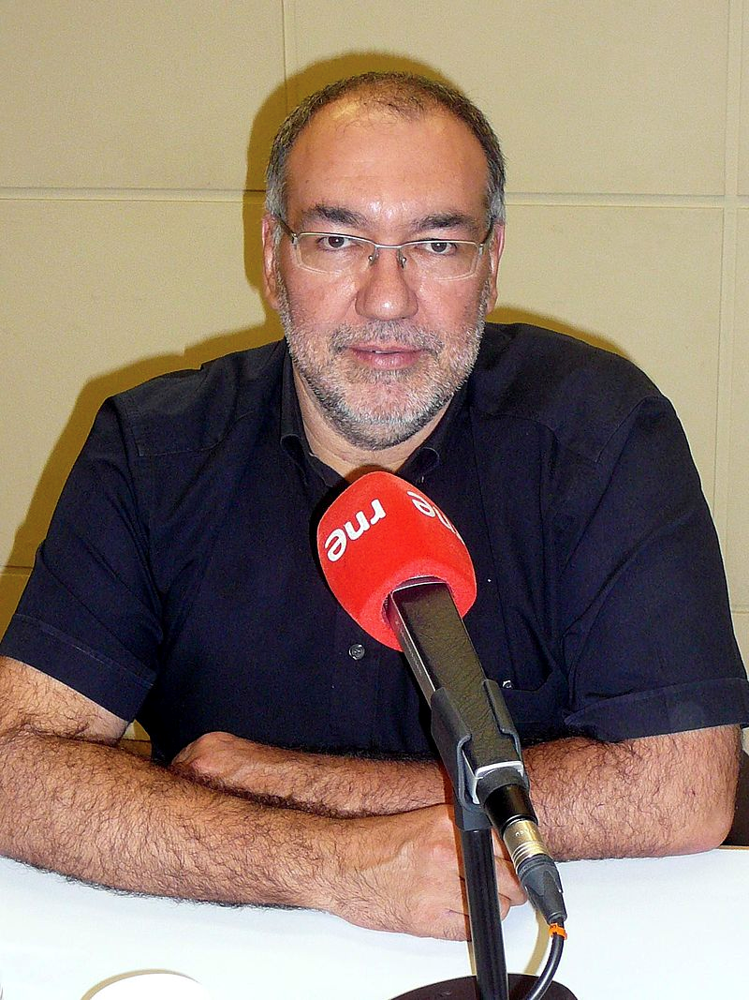

Por cuarto año consecutivo, se realizará un taller con empresas privadas organizado por el Grupo Especializado de Jóvenes Investigadores Químicos (JIQ). El objetivo principal de esta iniciativa es mostrar las salidas profesionales en el sector empresarial a jóvenes químicos cuya trayectoria ha estado y está vinculada fundamentalmente al mundo académico.
Este año, el taller se repartirá a lo largo de todo el congreso y consistirá en charlas y talleres para dar una visión más general de salidas profesionales. Los primeros ponentes confirmados de este año son:
Rebecca Brodie
 Deputy Editor of Analyst, Analytical Methods & JAAS
Deputy Editor of Analyst, Analytical Methods & JAAS
Careers outside the lab - a career in publishing
Come and listen to Rebecca Brodie speak about a career in Scientific Publishing: the role of a society publisher and what happens at The Royal Society of Chemistry, the path taken to get there, and the variety of different roles that are available.
Enrique Sánchez
Technical Content Editor at Mestelab ResearchChemistry software solutions - A world of possibilities outside the lab
Join this talk where Enrique Sanchez will speak about what Mestrelab Research company does as an example of a scientific career outside the lab.
An overview of one of Mestrelab´s latest products will be shown:
Mbook, an ELN (Electronic Lab Notebook) designed for the synthetic chemist needs. This is a product which 6 of the 12 chemists employed by Mestrelab have contributed to.
Big Van, Científicos Sobre Ruedas

Grupo de monologuistas científicos apasionados de la divulgación de la ciencia de una forma amena y asequible para todos los públicos. Nos harán reír con sus monólogos y nos explicarán su experiencia personal de pasar de una poyata a un escenario.
Dr. Míriam Plana

Regional Marketing Manager Spain & Portugal
Why SciFinder? Let's try a search!
SciFinder es una plataforma que ofrece acceso ilimitado a la fuente más completa y fiable del mundo de referencias, substancias y reacciones de química y ciencias relacionadas. En este taller se mostrará qué hay disponible en SciFinder y solucionaremos un ejercicio donde aprenderemos, para los que no conozcan la herramienta, a introducirnos en el "mundo de las búsquedas de SciFinder"; y, para los más experimentados, conocer nuevos trucos y consejos para analizar y refinar búsquedas hasta encontrar el resultado esperado. Además, aprenderemos a encontrar información clave en Patentes, con la ayuda de la nueva herramienta PatentPak.
Dr. Bernardo Herradón García

Investigador Científico en el Instituto de Química Orgánica General (IQOG) del CSIC y Divulgador Científico
Divulgación Científica: como impactar en la Sociedad
Bernardo Herradón compartirá con los asistentes al Simposio su experiencia como narrador científico en los medios de comunicación y las actividades de divulgación que ha realizado a estudiantes de ESO y Bachillerato.
Porqué es importante transmitir nuestra investigación al resto de la sociedad? Qué ganamos con ello? Como se puede conseguir? Preguntas que siempre nos hacemos y Bernardo nos intentará contestar.